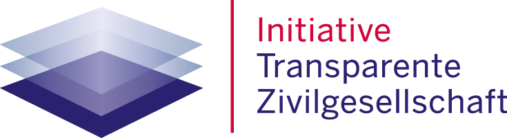

Fördermitglied werden
Der beste Weg, uns zu helfen. CADSE kann mit einem festen Betrag rechnen und für die Zukunft planen. Du bestimmst die Höhe selbst, hast sonst keine Verpflichtungen und kannst jederzeit austreten.
Antrag herunterladenSpenden
Aquisito e.V. arbeitet komplett ehrenamtlich. Was du gibst, geht an das Kinder- und Jugendzentrum CADSE in Cochabamba — für Hausaufgabenhilfe, Sport, Kunst und Englischunterricht.
Mery und ihr Team kommen selbst aus dem Stadtteil. Sie entscheiden vor Ort, was gebraucht wird, und rechnen jedes Projekt einzeln ab.
Mittelverwendung
Wir arbeiten ausschließlich ehrenamtlich — niemand bei Aquisito bekommt ein Gehalt. Die Zahlen stammen aus dem Finanzbericht und sind Jahr für Jahr nachlesbar.
{{BAND_LINE_3}}
Andere Wege
Der beste Weg, uns zu helfen. CADSE kann mit einem festen Betrag rechnen und für die Zukunft planen. Du bestimmst die Höhe selbst, hast sonst keine Verpflichtungen und kannst jederzeit austreten.
Antrag herunterladenGeburtstag, Hochzeit, Jubiläum: statt Geschenken um eine Spende für CADSE bitten. Wir stellen für alle Beteiligten Bescheinigungen aus und schicken dir hinterher, was damit passiert ist.
Schreib unsWir arbeiten mit Stiftungen und Unternehmen zusammen — die Schmitz Stiftung hat mit 9.990 € den zweiten CADSE-Standort ermöglicht. Für Kooperationen melde dich bei Natha oder Thomas.
Kooperation anfragenIn einem großen Gemeinschaftsprojekt haben CADSE und Aquisito zusammen ein Kochbuch geschrieben, das Deutschland die Türen zur bolivianischen Küche öffnet. Bestell dir dein Exemplar und unterstütze damit die Arbeit von CADSE in Bolivien.
Kochbuch bestellenVertrauen
Sowohl der Beitrag von Fördermitgliedern als auch einzelne Spenden können steuerlich abgesetzt werden. Für Beträge bis 300 € im Jahr genügt dem Finanzamt dein Kontoauszug. Darüber stellen wir eine Bescheinigung aus und verschicken sie im Februar des Folgejahres.
Für eine Bescheinigung schick uns deine Adresse an info@aquisito.de.
Aquisito e.V. ist nach § 5 Abs. 1 Nr. 9 KStG von der Körperschaftsteuer und nach § 3 Nr. 6 GewStG von der Gewerbesteuer befreit. Zuständig ist das Finanzamt Aachen-Stadt, Steuernummer 201/5905/6228. Wir fördern ausschließlich Jugendhilfe, Erziehung und die Gleichberechtigung von Frauen und Männern.
{{KONTAKT_SPENDEN_NAME}} führt bei uns die Kasse und beantwortet alles zu Bescheinigungen, Fördermitgliedschaft und Finanzberichten.
Wir haben uns verpflichtet, zehn Angaben über den Verein offenzulegen und aktuell zu halten — von der Satzung bis zur Mittelherkunft.
